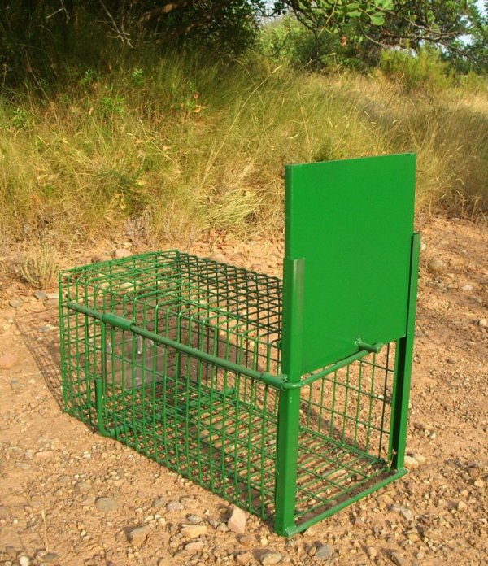

El hambre puede más que la cautela. Necesitás comer, y la carnada está ahí, tan cerca, tan fácil. Decides que podés ser lo suficientemente astuto para tomarla sin activar la trampa.
Te acercas lentamente, evaluando la estructura. Es una trampa simple - una jaula con un mecanismo de resorte. Si tocás la carnada desde el ángulo equivocado, la puerta se cierra.
Extiendes tu pata con cuidado, tu corazón late rápido. Casi alcanzas la carnada cuando escuchás algo - pasos humanos acercándose.
El pescador viene a revisar su trampa. No te ha visto todavía, pero está a menos de un minuto de distancia. Tu pata aún está dentro de la estructura de la trampa.